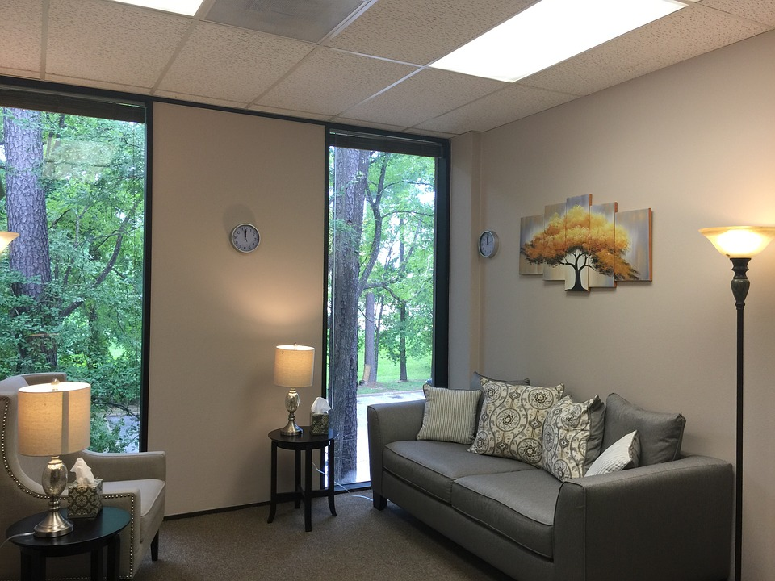

Chapter 1: Defining The Topic

You: Hi Sofia. I was informed that you requested counseling today.
Sofia: Hi. Yes, I want to eventually be able to look at my past without letting it destroy me.
You: That's very brave of you. I will be asking a few questions; however, please feel free to only say what you are comfortable with and know that I am here to support you as well as listen to you. I will not judge you.
Sofia: Thank you. What would you like to ask?
You: Firstly, I remember you briefly mentioning that your family was struggling financially, but was anyone in your family threatened or offered substantial payment?
Sofia gives you a shocked face: What? No, we were trying to make ends meet to avoid living on the street, but no one threated us or offered a ton of money. Are those how people end up trafficked like I was?
You: Yes, well to an extent. They are two of many potential ways that traffickers find their victims.
Sofia: Ahh I understand. Well, I ended up becoming a trafficking victim by a fake romance. You see,I met a man twice my age who showed interest in me. I eventually thought that he would be the one for me and we were even engaged. He promised that he would help me achieve my dreams of becoming a singer. Little did I know that he had no intention of honoring his word... Sorry, I need to take a second to breathe.
You: It's quite all right. Take all the time you need. I would like to take this time to remind you that you are both brave and strong.
Sofia steadies her breathing: Thank you. Well as I was still with my parents, he asked me to visit him and his aunt, but once I arrived, he was nowhere in sight and I later found out that his aunt was the madam of a brothel and I was deceieved by the one person I trusted to keep me safe. It still hurts to think about how easily he left me broken-hearted and sold me to multiple men.
I was also disheartened when I learned that in a sense, my situation is not unique. There are hundreds if not thousands of women being trafficked world-wide.
That's all I wanted to say for today's session. Would you be ok with us resuming this conversation in a later counseling session?
You: Of course we can resume this conversation during a later counseling session. Thank you for trusting me with such a personal account. I would also like to take the time to remind you that you are a survivor and the road ahead of you can be different than what exists behind you.
Continue